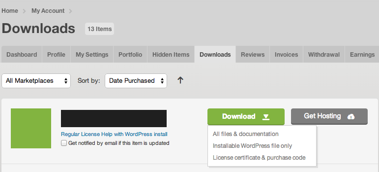
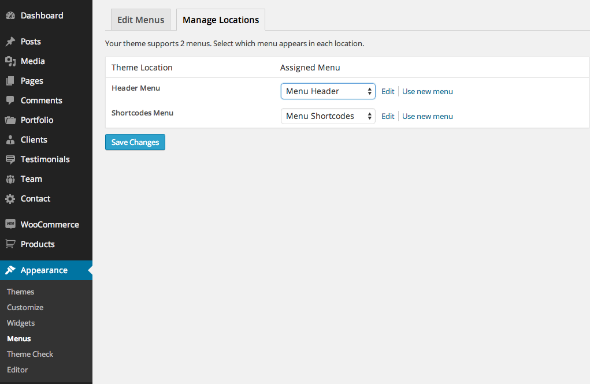
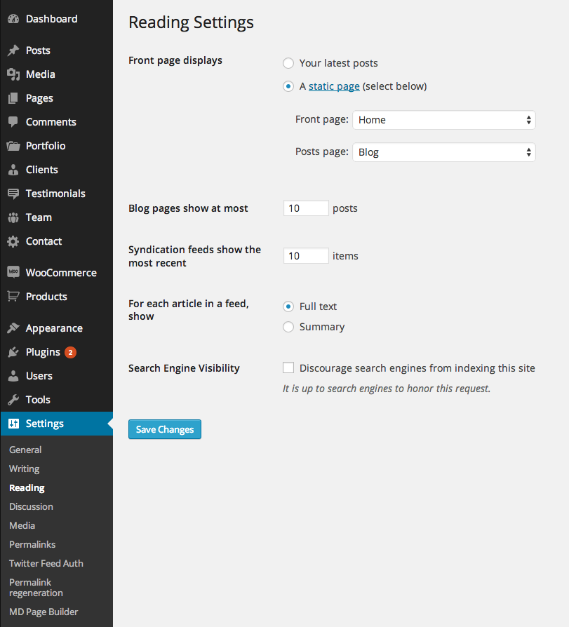
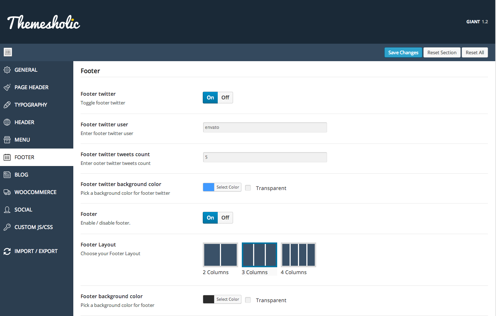

Flex Documentation
An overview of Flex, how to download and use, theme options, shortcodes and more.
An overview of Flex, how to download and use, theme options, shortcodes and more.
We would like to thank you for purchasing Flex!
This documentation file helps you to understand the whole theme concept and how it works. You should read all sections of the file before start your work. Here have multiple detailed explain of elements, theme sections and included tutorials.
After that you still can't find the solution yet, please leave a ticket on Support system then support agents help your issue.
Surely you have already installed WordPress on your server. If you don't installed it yet and you are new to WP and have problems installing it, you might want to check out following tips.
You need to download theme files after you've purchased the it. Following image describes downloads section of the item and you have 2 download choices.

Downloading All Files gives you a Flex-full.zip file with all the content listed below
Downloading the installalable WordPress theme only gives you the Flex.zip file.
You can either choose to upload the theme to your server via WordPress upload function or your server via ftp.
Appearance -> ThemesInstall Themes tabFlex.zip file (it is located in the folder you've downloaded from ThemeForest).Install Now buttonwp-content -> themes directoryAppearance -> Themes of your dashboard and Activate the theme.After the activation you see this notice at top of your dashboard. This theme requires those plugins and you need to install it.
Please click on Begin insalling plugins.
Please select all or desired plugins then select Install option on dropdown and click on Apply button.
You will see this page after activated plugins.
Back to plugins list and activate the selected plugins.
Allows you to regenerate your thumbnails after changing theme. If you install Flex on your existing Wordpress installation, you need to regenerate your thumbnails to be compatible with Flex theme thumbnails sizes, otherwise you need to resubmit all your images manually.
DownloadTo install the Revolution Slider Dummy Data go to Revolution Slider => Import Slider and choose the file revslider-dummy.zip included in the Dummy Data folder.
You can add multiple pages with multiple button clicks.
XML data imports only page and post content. Therefore we need to set following few simple options on your site again.
Please go to the Appearance => Menus and select your custom menu on Header menu location. Shortcodes menu is for demo purpose only.
Please go to the Setting => Reading and select your custom page as Front Page on Static pages section of Front Page Displays.
Please go to the Theme Options => Footer and enable Footer area and select your layout.
Then go to the Appearance => Widgets and include your widgets into sidebar areas.
Theme Options panel has many options those help you to control your site. You have to know only where your desired options exist and how to use them. Please take some time to navigate through each tab and read option's description.
Theme Options Panel
This theme have a powerful Page Builder based on WP Bakery Visual Composer.
Everytime you create a new page, you'll find the button "MD Page Builder" under the Title input. Click on the button to activate the page builder mode, and start create content simply clicking on Add Section or Element.
For further information about the Page Builder, please visit official site.
MD Page Builder
MD Page Builder Activation
A Post Format is a piece of meta information that can be used by a theme to customize its presentation of a post.
Flex supports differents post format and this style is inherited by WP 3.6+. But it doesn't matter and works equally if you are using previous version of WordPress core.
More about Post Format here http://codex.wordpress.org/Post_Formats
You'll find Page options at bottom of your main editor. Then you can control your page with that. Please read the option name and description and use them.